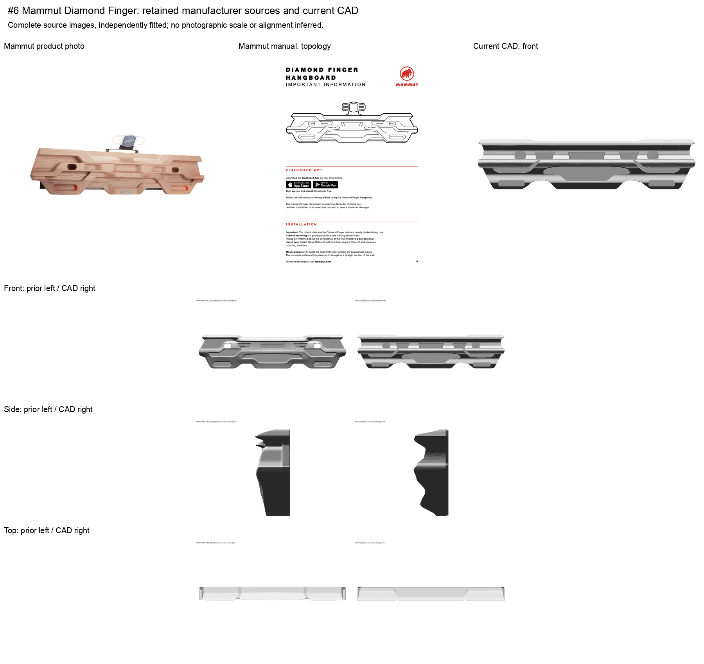
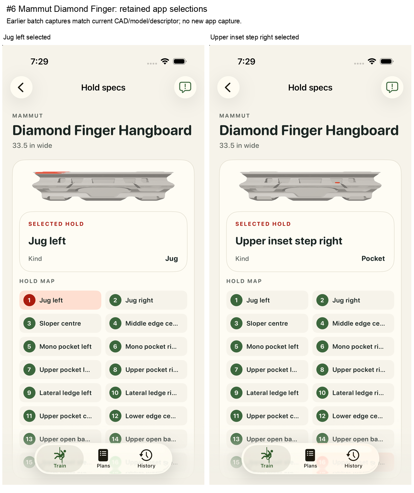

Human shape review pending. Existing16 selectable contacts retained. Two lower recesses are body geometry only; the inherited21-surface subtitle remains unresolved. Depths, relief, height and thickness are display estimates. Hardware, phone cradle, logos and colored inserts are omitted.
Retained manufacturer photo/manual and complete front/side/top comparisons. Earlier app captures match the current source/model/descriptor; no new runtime capture.
Source audit · Image and package provenance · Independent verification

